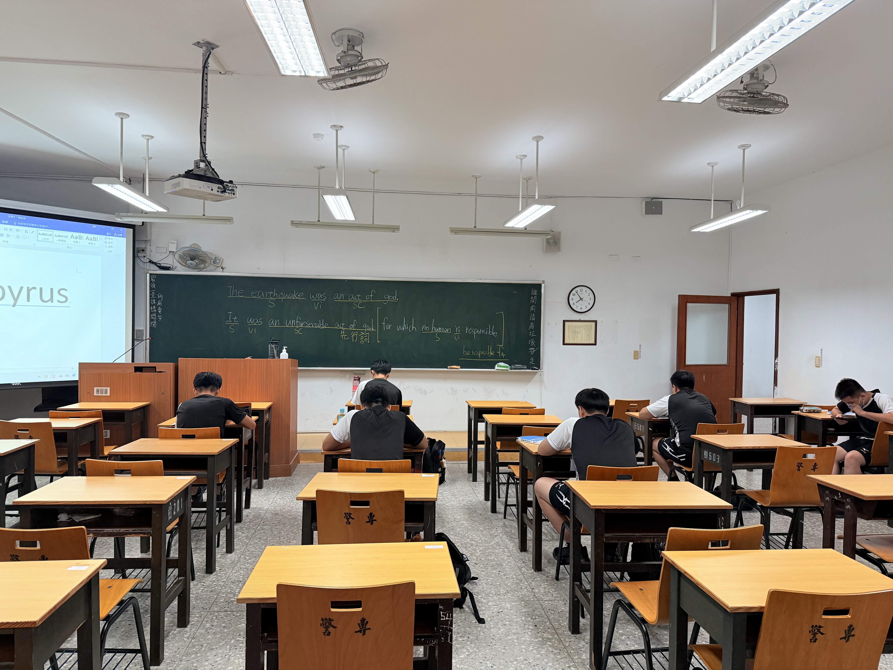
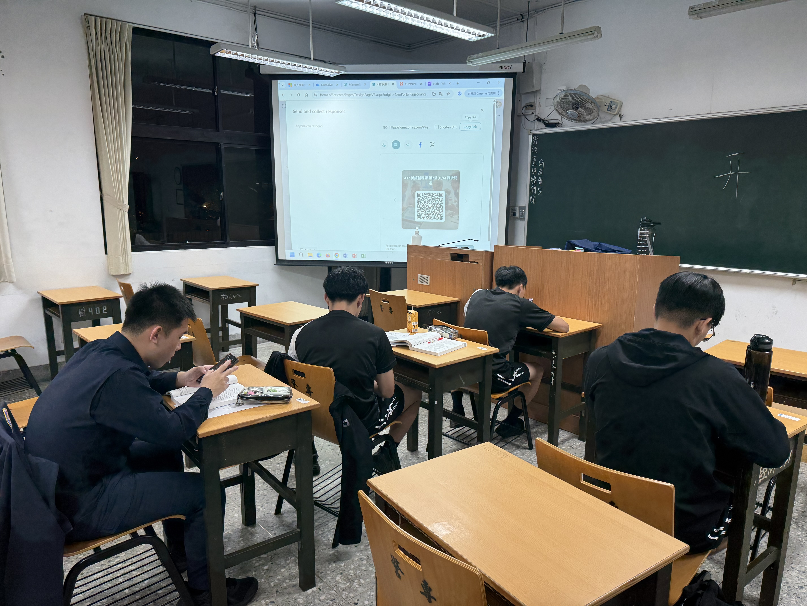
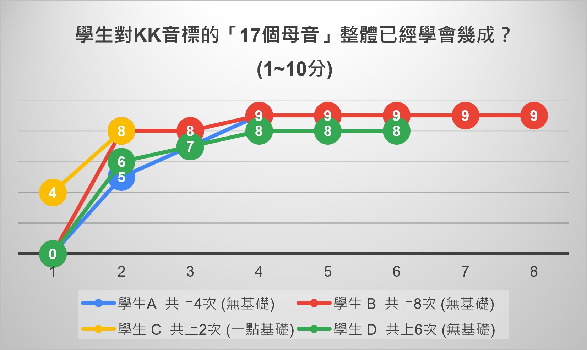
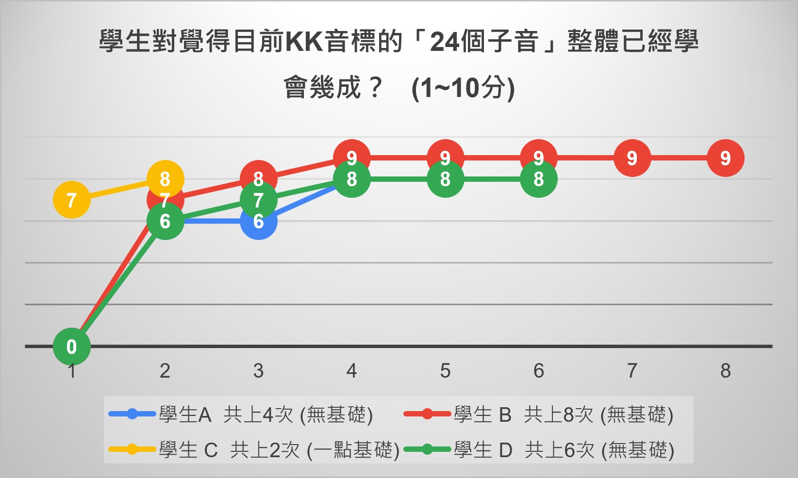
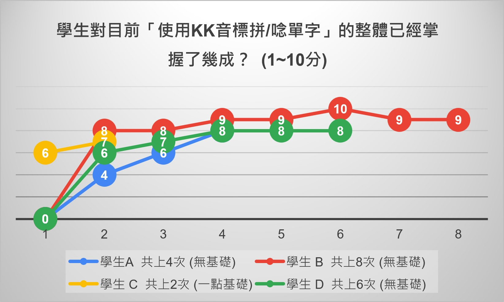

KK音標教學案例分享
於支援警專工作期間，利用勤餘時間無償輔導同學音標課程。
案例一：警專437英語基礎培養班教學成果
一、整體輔導課程概況說明
本輔導課程從114年9月4日開始實施，至115年1月8日(四)結束，共11堂課，每堂90分鐘。 課程主要是輔導KK音標的使用，並結合執法英文字彙手冊進行單字發音教學，讓同學在課程中能夠有效提升英語發音能力。 更具體來說，將字彙手冊每個單字，逐條指導同學觀察、拆解音節、拼音、正確發音，並輔以Yahoo或劍橋字典查詢單字發音，以驗證其音標所發音之正確性。 發音是提升英語能力的重要基礎，因為有聲音才能將字彙逐漸記住，因此單字發音之正確性會長遠地影響英文整體學習情況。 然而，實際參與的同學數量並不多，可能基於興趣缺乏、課程重補修或時間安排問題等諸多因素不便參與。但這些少數參與的同學皆表現出濃厚的學習興趣和積極的參與態度。


二、教學結果發現
11堂課的教學過程中，大家參與次數皆不同。主要以3位較積極參與且對音標完全無基礎之(A、B、D)同學作為學習成果觀察對象並輔以統計圖說明。 雖然出席次數不同，但可觀察到共通發現：



綜上所述
3位無基礎的同學約在第4堂課(6小時輔導)已經將17個母音、24個子音掌握8成以上，並能將KK音標應用於拚念單字，顯示出本輔導課程對於提升英語發音能力具有明顯的成效。
三、教學上之建議與省思
1、除了K.K.演示教學之外，亦應導入IPA音標的教學
在本次授課模式，同學於第4堂逐漸可以掌握K.K.音標之應用。因此，可以將音標逐漸過渡至IPA音標，以符合國際趨勢。 理由在於K.K.目前幾乎只有臺灣在英語教學上仍存在，例如雜誌、學校英文課本、字典等，但在使用劍橋字典等國際資源時，多以IPA音標更為通用。
2、適度調整課程內容，課程多元化可行性
因為是初辦輔導教學課程，但又礙於警專既定之時間作息安排，時常有其他活動、補課、重補修等情況， 導致同學參與度不高或無法穩定出席，因此在本11堂課程皆比較著重於K.K.音標應用。 然而，既然從此教學次數觀察到，學生只要出席4堂課，便能掌握K.K.音標之應用，因此可以延伸輔導跟警察四等特考或新聞有關題材。
3、掌握出席情況以及增加參與人數建構更有指標性之數據
未來將於115年9月第二次擬辦本教學輔導課程，對象為專455之隊上學生，由於新生剛入學無重補修，參與人數應當可提升，鼓勵同學培養基礎英語基礎實力。
四、主要書籍使用－執法英文字彙手冊（三版）